Propensity Score Analysis for HCV Treatment and Kidney Injury
Causal Inference Team
2025-03-03
Introduction
This analysis examines the potential causal relationship between sofosbuvir (SOF)-containing direct-acting antiviral (DAA) regimens and acute kidney injury (AKI) in patients with Hepatitis C Virus (HCV) infection. We’ll use propensity score matching to balance treatment groups and estimate the treatment effect.
Study Objective
To assess whether patients with chronic HCV infection who were exposed to SOF-containing DAA regimens experience a higher rate of claims for AKI, compared to a cohort of propensity score-matched patients who were exposed to non-SOF-containing DAA regimens.
Load Required Libraries
# Load necessary libraries
library(dplyr)
library(ggplot2)
library(MatchIt)
library(cobalt)
library(tableone)
library(survival)
library(survminer)Data Loading and Preparation
# Load the imputed dataset
# In a real-world scenario, we would use:
# df <- read.csv("data/imputed_case_study_data.csv")
# In this analysis, we'll use our simulated data
set.seed(42)
# Load simulated dataset if it exists, otherwise create it
if(file.exists("data/imputed_case_study_data.csv")) {
df <- read.csv("data/imputed_case_study_data.csv")
} else {
# We'll recreate a simplified version of our simulated dataset
n <- 5000
# Simulate baseline covariates
age <- rnorm(n, mean = 60, sd = 10) # Age centered at 60
sex <- rbinom(n, 1, 0.5) # Binary sex variable (0 or 1)
diabetes <- rbinom(n, 1, 0.3) # 30% prevalence of diabetes
hypertension <- rbinom(n, 1, 0.4) # 40% prevalence of hypertension
baseline_gfr <- rnorm(n, mean = 90, sd = 15) # Baseline kidney function (eGFR)
bmi <- rnorm(n, mean = 28, sd = 5) # BMI distribution
# Create some additional covariates
cirrhosis <- rbinom(n, 1, 0.2)
prev_aki <- rbinom(n, 1, 0.05)
heart_failure <- rbinom(n, 1, 0.1)
nsaid_use <- rbinom(n, 1, 0.3)
# Non-linearity in the relationship between age and treatment
age_effect <- exp(-0.05 * (age - 60)^2)
# Treatment assignment with some confounding
treatment_prob <- plogis(-1 + 0.02 * age + 0.4 * diabetes + 0.3 * hypertension +
0.2 * sex + 0.01 * baseline_gfr + 0.02 * bmi - 0.5 * cirrhosis)
treatment <- rbinom(n, 1, treatment_prob)
# Outcome model
outcome_prob <- plogis(-4 + 0.03 * age + 0.5 * diabetes + 0.4 * hypertension +
0.3 * sex - 0.015 * baseline_gfr + 0.025 * bmi +
1.2 * prev_aki + 0.8 * heart_failure +
0.6 * nsaid_use + 0.2 * treatment)
event <- rbinom(n, 1, outcome_prob)
# Simulate follow-up time (shorter for those with events)
time_to_event <- rexp(n, rate = 0.02 * (1 + outcome_prob))
# Censoring mechanism
censoring_time <- rexp(n, rate = 1/10) # Administrative censoring at random times
observed_time <- pmin(time_to_event, censoring_time)
censored <- as.integer(time_to_event > censoring_time)
# Create dataframe
df <- data.frame(
age, sex, diabetes, hypertension, baseline_gfr, bmi,
cirrhosis, prev_aki, heart_failure, nsaid_use,
treatment, event, time_to_event, observed_time, censored
)
# Create a categorical/factor version of treatment for display
df$treatment_group <- factor(df$treatment,
levels = c(0, 1),
labels = c("non-SOF DAAs", "SOF-DAAs"))
# Save the dataset
dir.create("data", showWarnings = FALSE)
write.csv(df, "data/imputed_case_study_data.csv", row.names = FALSE)
}
# For demonstration, we'll create a categorical treatment variable if it doesn't exist
if(!"treatment_group" %in% names(df)) {
df$treatment_group <- factor(df$treatment,
levels = c(0, 1),
labels = c("non-SOF DAAs", "SOF-DAAs"))
}
# Display summary of the dataset
glimpse(df)## Rows: 5,000
## Columns: 16
## $ age <dbl> 73.70958, 54.35302, 63.63128, 66.32863, 64.04268, 58.9…
## $ sex <int> 1, 1, 1, 0, 1, 1, 0, 1, 0, 0, 0, 1, 1, 0, 1, 1, 0, 0, …
## $ diabetes <int> 0, 1, 0, 0, 0, 0, 0, 0, 1, 0, 0, 0, 0, 0, 1, 0, 1, 0, …
## $ hypertension <int> 1, 0, 0, 1, 0, 0, 0, 0, 1, 0, 0, 1, 1, 1, 0, 1, 1, 1, …
## $ baseline_gfr <dbl> 83.85757, 76.06443, 113.02098, 93.36407, 58.95216, 105…
## $ bmi <dbl> 35.63937, 34.34018, 28.95903, 27.65028, 20.65748, 28.2…
## $ cirrhosis <int> 0, 1, 0, 0, 1, 1, 1, 0, 0, 0, 0, 0, 1, 0, 0, 0, 0, 0, …
## $ prev_aki <int> 0, 0, 0, 0, 0, 0, 0, 0, 0, 0, 0, 0, 0, 0, 0, 1, 1, 0, …
## $ heart_failure <int> 1, 0, 1, 0, 0, 0, 0, 0, 0, 0, 0, 0, 0, 0, 0, 0, 0, 1, …
## $ nsaid_use <int> 1, 0, 1, 1, 0, 0, 1, 1, 0, 1, 1, 0, 1, 0, 1, 0, 1, 0, …
## $ treatment <int> 1, 1, 1, 0, 0, 1, 1, 0, 1, 1, 1, 1, 1, 1, 1, 0, 1, 1, …
## $ event <int> 1, 0, 1, 1, 0, 0, 1, 0, 0, 0, 0, 0, 1, 0, 0, 1, 1, 0, …
## $ time_to_event <dbl> 28.6264231, 6.1182104, 47.4531156, 21.1052884, 142.567…
## $ observed_time <dbl> 6.9568930, 6.1182104, 7.3257019, 7.4564820, 7.5570745,…
## $ censored <int> 1, 0, 1, 1, 1, 1, 1, 1, 1, 1, 1, 0, 1, 1, 1, 1, 1, 1, …
## $ treatment_group <chr> "SOF-DAAs", "SOF-DAAs", "SOF-DAAs", "non-SOF DAAs", "n…Pre-Matching Exploratory Analysis
Patient Characteristics by Treatment Group
# Define variable list for the table
vars <- c("age", "sex", "diabetes", "hypertension", "baseline_gfr", "bmi",
"cirrhosis", "prev_aki", "heart_failure", "nsaid_use")
# Create a table comparing characteristics by treatment group
table1 <- CreateTableOne(vars = vars, strata = "treatment_group", data = df, test = TRUE)
print(table1, smd = TRUE)## Stratified by treatment_group
## non-SOF DAAs SOF-DAAs p test SMD
## n 693 4307
## age (mean (SD)) 58.46 (10.33) 60.08 (9.99) <0.001 0.159
## sex (mean (SD)) 0.48 (0.50) 0.51 (0.50) 0.082 0.071
## diabetes (mean (SD)) 0.22 (0.41) 0.31 (0.46) <0.001 0.197
## hypertension (mean (SD)) 0.33 (0.47) 0.41 (0.49) <0.001 0.166
## baseline_gfr (mean (SD)) 87.98 (14.89) 90.34 (15.18) <0.001 0.157
## bmi (mean (SD)) 27.55 (5.08) 28.11 (5.00) 0.007 0.111
## cirrhosis (mean (SD)) 0.29 (0.45) 0.21 (0.40) <0.001 0.187
## prev_aki (mean (SD)) 0.06 (0.23) 0.05 (0.23) 0.697 0.016
## heart_failure (mean (SD)) 0.09 (0.29) 0.11 (0.31) 0.279 0.045
## nsaid_use (mean (SD)) 0.28 (0.45) 0.30 (0.46) 0.457 0.031Outcome Prevalence by Treatment Group
# Calculate outcome prevalence by treatment group
outcome_table <- df %>%
group_by(treatment_group) %>%
summarise(
n_patients = n(),
n_events = sum(event),
event_rate = mean(event),
.groups = 'drop'
)
knitr::kable(outcome_table, caption = "Outcome (AKI) by Treatment Group (Before Matching)")| treatment_group | n_patients | n_events | event_rate |
|---|---|---|---|
| SOF-DAAs | 4307 | 706 | 0.1639192 |
| non-SOF DAAs | 693 | 87 | 0.1255411 |
# Plot outcome prevalence
ggplot(outcome_table, aes(x = treatment_group, y = event_rate, fill = treatment_group)) +
geom_col() +
geom_text(aes(label = sprintf("%.1f%%", 100 * event_rate)),
vjust = -0.5, size = 4) +
labs(
title = "Unadjusted Event Rate by Treatment Group",
x = "Treatment Group",
y = "Event Rate",
fill = "Treatment Group"
) +
scale_y_continuous(labels = scales::percent, limits = c(0, max(outcome_table$event_rate) * 1.2)) +
theme_minimal() +
theme(legend.position = "none")
Propensity Score Estimation
Estimating Propensity Scores
# Estimate propensity scores using logistic regression
ps_formula <- as.formula(
"treatment ~ age + sex + diabetes + hypertension + baseline_gfr + bmi +
cirrhosis + prev_aki + heart_failure + nsaid_use"
)
ps_model <- glm(ps_formula, data = df, family = binomial)
summary(ps_model)##
## Call:
## glm(formula = ps_formula, family = binomial, data = df)
##
## Coefficients:
## Estimate Std. Error z value Pr(>|z|)
## (Intercept) -1.013098 0.425585 -2.380 0.017290 *
## age 0.017393 0.004143 4.198 2.69e-05 ***
## sex 0.164790 0.082930 1.987 0.046911 *
## diabetes 0.467940 0.098369 4.757 1.96e-06 ***
## hypertension 0.347523 0.087474 3.973 7.10e-05 ***
## baseline_gfr 0.010476 0.002753 3.805 0.000142 ***
## bmi 0.022374 0.008243 2.714 0.006641 **
## cirrhosis -0.438406 0.092976 -4.715 2.41e-06 ***
## prev_aki -0.073327 0.178347 -0.411 0.680966
## heart_failure 0.151954 0.141664 1.073 0.283433
## nsaid_use 0.062446 0.091709 0.681 0.495925
## ---
## Signif. codes: 0 '***' 0.001 '**' 0.01 '*' 0.05 '.' 0.1 ' ' 1
##
## (Dispersion parameter for binomial family taken to be 1)
##
## Null deviance: 4024.1 on 4999 degrees of freedom
## Residual deviance: 3919.4 on 4989 degrees of freedom
## AIC: 3941.4
##
## Number of Fisher Scoring iterations: 5# Add propensity scores to the dataframe
df$ps <- predict(ps_model, type = "response")
# Display propensity score distribution
summary(df$ps)## Min. 1st Qu. Median Mean 3rd Qu. Max.
## 0.6432 0.8322 0.8686 0.8614 0.8987 0.9599Propensity Score Distribution by Treatment Group
# Visualize the distribution of propensity scores by treatment group
ggplot(df, aes(x = ps, fill = treatment_group)) +
geom_density(alpha = 0.5) +
labs(
title = "Propensity Score Distribution (Pre-Matching)",
x = "Propensity Score",
y = "Density",
fill = "Treatment Group"
) +
theme_minimal() +
scale_fill_brewer(palette = "Set1")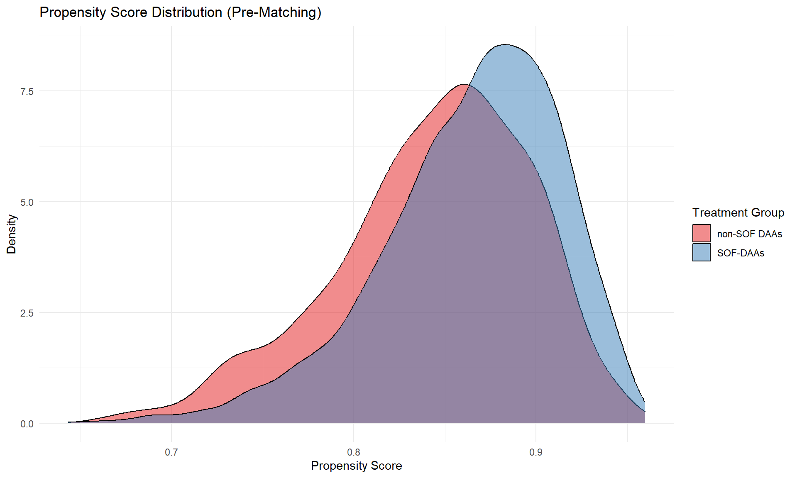
Propensity Score Matching
Perform Matching
# Perform propensity score matching
matchit_out <- matchit(
formula = ps_formula,
data = df,
method = "nearest",
caliper = 0.2,
ratio = 1
)
# Display matching summary
summary(matchit_out)##
## Call:
## matchit(formula = ps_formula, data = df, method = "nearest",
## caliper = 0.2, ratio = 1)
##
## Summary of Balance for All Data:
## Means Treated Means Control Std. Mean Diff. Var. Ratio eCDF Mean
## distance 0.8643 0.8431 0.4293 0.8532 0.1179
## age 60.0803 58.4625 0.1620 0.9354 0.0453
## sex 0.5117 0.4762 0.0711 . 0.0355
## diabetes 0.3058 0.2193 0.1876 . 0.0864
## hypertension 0.4072 0.3276 0.1622 . 0.0797
## baseline_gfr 90.3447 87.9825 0.1556 1.0402 0.0432
## bmi 28.1081 27.5504 0.1115 0.9694 0.0325
## cirrhosis 0.2066 0.2872 -0.1989 . 0.0805
## prev_aki 0.0541 0.0577 -0.0160 . 0.0036
## heart_failure 0.1059 0.0924 0.0439 . 0.0135
## nsaid_use 0.2967 0.2828 0.0304 . 0.0139
## eCDF Max
## distance 0.1780
## age 0.0824
## sex 0.0355
## diabetes 0.0864
## hypertension 0.0797
## baseline_gfr 0.0733
## bmi 0.0568
## cirrhosis 0.0805
## prev_aki 0.0036
## heart_failure 0.0135
## nsaid_use 0.0139
##
## Summary of Balance for Matched Data:
## Means Treated Means Control Std. Mean Diff. Var. Ratio eCDF Mean
## distance 0.8531 0.8431 0.2019 1.0065 0.0567
## age 59.4706 58.4625 0.1009 0.9398 0.0280
## sex 0.4762 0.4762 0.0000 . 0.0000
## diabetes 0.2554 0.2193 0.0783 . 0.0361
## hypertension 0.3694 0.3276 0.0852 . 0.0418
## baseline_gfr 89.0838 87.9825 0.0725 1.0474 0.0221
## bmi 28.0324 27.5504 0.0963 0.9517 0.0276
## cirrhosis 0.2468 0.2872 -0.0998 . 0.0404
## prev_aki 0.0635 0.0577 0.0255 . 0.0058
## heart_failure 0.0794 0.0924 -0.0422 . 0.0130
## nsaid_use 0.2944 0.2828 0.0253 . 0.0115
## eCDF Max Std. Pair Dist.
## distance 0.0909 0.2019
## age 0.0649 1.0744
## sex 0.0000 0.4848
## diabetes 0.0361 0.6295
## hypertension 0.0418 0.7959
## baseline_gfr 0.0505 0.9971
## bmi 0.0606 1.1150
## cirrhosis 0.0404 0.7128
## prev_aki 0.0058 0.5358
## heart_failure 0.0130 0.4831
## nsaid_use 0.0115 0.8782
##
## Sample Sizes:
## Control Treated
## All 693 4307
## Matched 693 693
## Unmatched 0 3614
## Discarded 0 0# Extract matched data
matched_df <- match.data(matchit_out)
# Number of matched pairs
cat("Matched sample size:", nrow(matched_df), "\n")## Matched sample size: 1386cat("Number of matched pairs:", nrow(matched_df) / 2, "\n")## Number of matched pairs: 693Post-Matching Assessment
Covariate Balance
# Create a balance table
bal_tab <- bal.tab(matchit_out, un = TRUE, m.threshold = 0.1)
print(bal_tab)## Balance Measures
## Type Diff.Un Diff.Adj M.Threshold
## distance Distance 0.4293 0.2019
## age Contin. 0.1620 0.1009 Not Balanced, >0.1
## sex Binary 0.0355 0.0000 Balanced, <0.1
## diabetes Binary 0.0864 0.0361 Balanced, <0.1
## hypertension Binary 0.0797 0.0418 Balanced, <0.1
## baseline_gfr Contin. 0.1556 0.0725 Balanced, <0.1
## bmi Contin. 0.1115 0.0963 Balanced, <0.1
## cirrhosis Binary -0.0805 -0.0404 Balanced, <0.1
## prev_aki Binary -0.0036 0.0058 Balanced, <0.1
## heart_failure Binary 0.0135 -0.0130 Balanced, <0.1
## nsaid_use Binary 0.0139 0.0115 Balanced, <0.1
##
## Balance tally for mean differences
## count
## Balanced, <0.1 9
## Not Balanced, >0.1 1
##
## Variable with the greatest mean difference
## Variable Diff.Adj M.Threshold
## age 0.1009 Not Balanced, >0.1
##
## Sample sizes
## Control Treated
## All 693 4307
## Matched 693 693
## Unmatched 0 3614# Create a love plot to visualize balance improvement
love.plot(bal_tab, threshold = 0.1, var.order = "unadjusted",
abs = TRUE, line = TRUE, colors = c("red", "blue"),
title = "Covariate Balance Before and After Matching")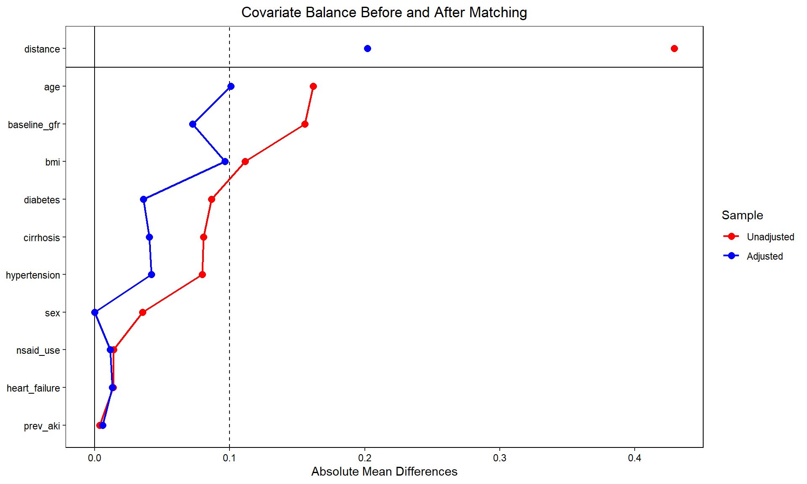
Propensity Score Distribution After Matching
# Visualize the distribution of propensity scores after matching
ggplot(matched_df, aes(x = ps, fill = treatment_group)) +
geom_density(alpha = 0.5) +
labs(
title = "Propensity Score Distribution (Post-Matching)",
x = "Propensity Score",
y = "Density",
fill = "Treatment Group"
) +
theme_minimal() +
scale_fill_brewer(palette = "Set1")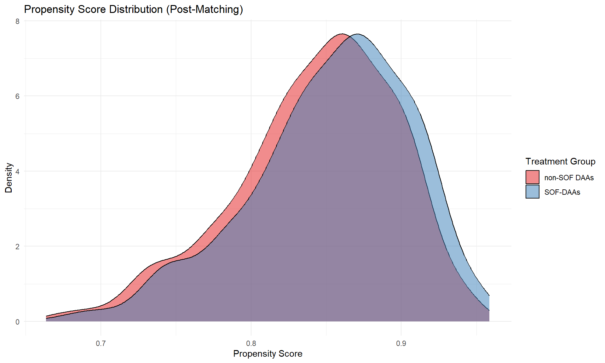
Covariate Balance Table
# Create a table comparing characteristics by treatment group after matching
matched_table1 <- CreateTableOne(vars = vars, strata = "treatment_group",
data = matched_df, test = TRUE)
print(matched_table1, smd = TRUE)## Stratified by treatment_group
## non-SOF DAAs SOF-DAAs p test SMD
## n 693 693
## age (mean (SD)) 58.46 (10.33) 59.47 (10.01) 0.065 0.099
## sex (mean (SD)) 0.48 (0.50) 0.48 (0.50) 1.000 <0.001
## diabetes (mean (SD)) 0.22 (0.41) 0.26 (0.44) 0.115 0.085
## hypertension (mean (SD)) 0.33 (0.47) 0.37 (0.48) 0.102 0.088
## baseline_gfr (mean (SD)) 87.98 (14.89) 89.08 (15.24) 0.174 0.073
## bmi (mean (SD)) 27.55 (5.08) 28.03 (4.96) 0.074 0.096
## cirrhosis (mean (SD)) 0.29 (0.45) 0.25 (0.43) 0.089 0.091
## prev_aki (mean (SD)) 0.06 (0.23) 0.06 (0.24) 0.653 0.024
## heart_failure (mean (SD)) 0.09 (0.29) 0.08 (0.27) 0.389 0.046
## nsaid_use (mean (SD)) 0.28 (0.45) 0.29 (0.46) 0.636 0.025Treatment Effect Estimation
Outcome Analysis After Matching
# Outcome rates in matched sample
matched_outcome <- matched_df %>%
group_by(treatment_group) %>%
summarise(
n_patients = n(),
n_events = sum(event),
event_rate = mean(event),
.groups = 'drop'
)
knitr::kable(matched_outcome, caption = "Outcome (AKI) by Treatment Group (After Matching)")| treatment_group | n_patients | n_events | event_rate |
|---|---|---|---|
| SOF-DAAs | 693 | 118 | 0.1702742 |
| non-SOF DAAs | 693 | 87 | 0.1255411 |
# Risk difference and risk ratio
ref_rate <- matched_outcome$event_rate[matched_outcome$treatment_group == "non-SOF DAAs"]
exp_rate <- matched_outcome$event_rate[matched_outcome$treatment_group == "SOF-DAAs"]
risk_difference <- exp_rate - ref_rate
risk_difference_per_1000 <- risk_difference * 1000
risk_ratio <- exp_rate / ref_rate
# Display results
results_df <- data.frame(
Measure = c("Risk in non-SOF DAAs", "Risk in SOF-DAAs",
"Risk Ratio", "Risk Difference", "Risk Difference per 1,000 patients"),
Value = c(ref_rate, exp_rate, risk_ratio, risk_difference, risk_difference_per_1000)
)
knitr::kable(results_df, digits = 4, caption = "Treatment Effect Estimates")| Measure | Value |
|---|---|
| Risk in non-SOF DAAs | 0.1255 |
| Risk in SOF-DAAs | 0.1703 |
| Risk Ratio | 1.3563 |
| Risk Difference | 0.0447 |
| Risk Difference per 1,000 patients | 44.7330 |
Cox Proportional Hazards Model
# Simple Cox model on matched data
cox_simple <- coxph(Surv(observed_time, event) ~ treatment, data = matched_df)
summary(cox_simple)## Call:
## coxph(formula = Surv(observed_time, event) ~ treatment, data = matched_df)
##
## n= 1386, number of events= 205
##
## coef exp(coef) se(coef) z Pr(>|z|)
## treatment 0.3511 1.4206 0.1420 2.473 0.0134 *
## ---
## Signif. codes: 0 '***' 0.001 '**' 0.01 '*' 0.05 '.' 0.1 ' ' 1
##
## exp(coef) exp(-coef) lower .95 upper .95
## treatment 1.421 0.7039 1.076 1.876
##
## Concordance= 0.538 (se = 0.02 )
## Likelihood ratio test= 6.2 on 1 df, p=0.01
## Wald test = 6.12 on 1 df, p=0.01
## Score (logrank) test = 6.18 on 1 df, p=0.01# Fully adjusted Cox model
cox_adjusted <- coxph(
Surv(observed_time, event) ~ treatment + age + sex + diabetes + hypertension +
baseline_gfr + bmi + cirrhosis + prev_aki + heart_failure + nsaid_use,
data = matched_df
)
summary(cox_adjusted)## Call:
## coxph(formula = Surv(observed_time, event) ~ treatment + age +
## sex + diabetes + hypertension + baseline_gfr + bmi + cirrhosis +
## prev_aki + heart_failure + nsaid_use, data = matched_df)
##
## n= 1386, number of events= 205
##
## coef exp(coef) se(coef) z Pr(>|z|)
## treatment 0.289261 1.335440 0.144447 2.003 0.045227 *
## age 0.035234 1.035862 0.007146 4.931 8.19e-07 ***
## sex 0.457838 1.580653 0.143906 3.182 0.001465 **
## diabetes 0.513380 1.670930 0.151572 3.387 0.000706 ***
## hypertension 0.271451 1.311866 0.142932 1.899 0.057544 .
## baseline_gfr -0.014264 0.985837 0.004802 -2.971 0.002971 **
## bmi -0.001313 0.998688 0.014181 -0.093 0.926210
## cirrhosis -0.120541 0.886441 0.160082 -0.753 0.451455
## prev_aki 0.424043 1.528127 0.252424 1.680 0.092979 .
## heart_failure 0.815234 2.259704 0.190639 4.276 1.90e-05 ***
## nsaid_use 0.558615 1.748249 0.144228 3.873 0.000107 ***
## ---
## Signif. codes: 0 '***' 0.001 '**' 0.01 '*' 0.05 '.' 0.1 ' ' 1
##
## exp(coef) exp(-coef) lower .95 upper .95
## treatment 1.3354 0.7488 1.0062 1.7725
## age 1.0359 0.9654 1.0215 1.0505
## sex 1.5807 0.6326 1.1922 2.0957
## diabetes 1.6709 0.5985 1.2415 2.2489
## hypertension 1.3119 0.7623 0.9913 1.7360
## baseline_gfr 0.9858 1.0144 0.9766 0.9952
## bmi 0.9987 1.0013 0.9713 1.0268
## cirrhosis 0.8864 1.1281 0.6477 1.2131
## prev_aki 1.5281 0.6544 0.9317 2.5062
## heart_failure 2.2597 0.4425 1.5552 3.2834
## nsaid_use 1.7482 0.5720 1.3178 2.3194
##
## Concordance= 0.671 (se = 0.021 )
## Likelihood ratio test= 96.33 on 11 df, p=9e-16
## Wald test = 103.8 on 11 df, p=<2e-16
## Score (logrank) test = 103.4 on 11 df, p=<2e-16# Forest plot for Cox model results
hr_simple <- round(exp(coef(cox_simple)["treatment"]), 2)
hr_simple_lower <- round(exp(confint(cox_simple)["treatment", 1]), 2)
hr_simple_upper <- round(exp(confint(cox_simple)["treatment", 2]), 2)
hr_adjusted <- round(exp(coef(cox_adjusted)["treatment"]), 2)
hr_adjusted_lower <- round(exp(confint(cox_adjusted)["treatment", 1]), 2)
hr_adjusted_upper <- round(exp(confint(cox_adjusted)["treatment", 2]), 2)
# Create data frame for forest plot
forest_data <- data.frame(
Model = c("Unadjusted", "Fully Adjusted"),
HR = c(hr_simple, hr_adjusted),
Lower = c(hr_simple_lower, hr_adjusted_lower),
Upper = c(hr_simple_upper, hr_adjusted_upper)
)
# Plot forest plot
ggplot(forest_data, aes(x = HR, y = Model)) +
geom_point(size = 3) +
geom_errorbarh(aes(xmin = Lower, xmax = Upper), height = 0.2) +
geom_vline(xintercept = 1, linetype = "dashed") +
labs(
title = "Hazard Ratios for Treatment Effect on AKI",
x = "Hazard Ratio (95% CI)",
y = ""
) +
scale_x_continuous(limits = c(0, max(forest_data$Upper) * 1.1)) +
theme_minimal() +
geom_text(aes(label = paste0(HR, " (", Lower, "-", Upper, ")")), vjust = -0.5, hjust = 0.5)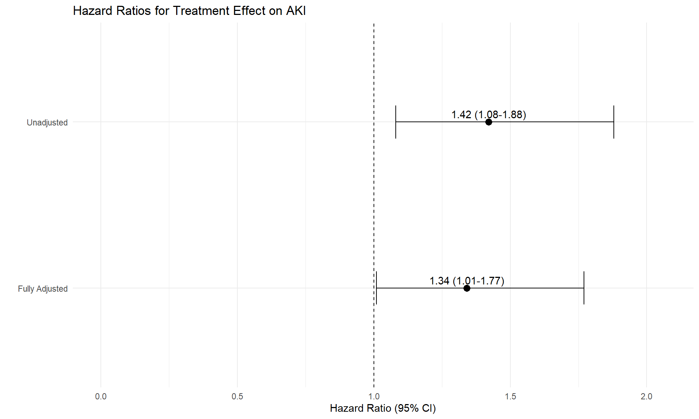
Survival Curves
# Create Kaplan-Meier curves
km_fit <- survfit(Surv(observed_time, event) ~ treatment_group, data = matched_df)
# Plot Kaplan-Meier curves
ggsurvplot(
km_fit,
data = matched_df,
conf.int = TRUE,
risk.table = TRUE,
pval = TRUE,
legend.labs = c("non-SOF DAAs", "SOF-DAAs"),
palette = c("blue", "red"),
title = "Kaplan-Meier Curves for AKI by Treatment Group",
xlab = "Time (days)",
ylab = "AKI-free Survival Probability",
risk.table.height = 0.25
)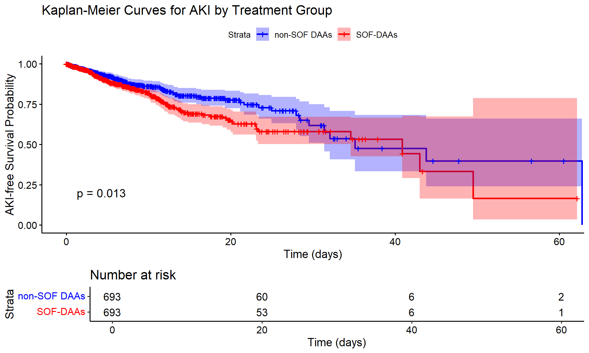
Sensitivity Analyses
Varying Caliper Width
# Try matching with different calipers
caliper_values <- c(0.1, 0.2, 0.3)
caliper_results <- data.frame()
for (cal in caliper_values) {
# Perform matching with current caliper
m_out <- matchit(ps_formula, data = df, method = "nearest", caliper = cal)
# Extract matched data
m_data <- match.data(m_out)
# Calculate treatment effect
model <- glm(event ~ treatment, data = m_data, family = binomial)
# Get odds ratio and confidence interval
or <- exp(coef(model)["treatment"])
ci <- exp(confint(model)["treatment", ])
# Add results to dataframe
caliper_results <- rbind(caliper_results,
data.frame(Caliper = cal,
Matched_Pairs = nrow(m_data)/2,
OR = or,
Lower_CI = ci[1],
Upper_CI = ci[2]))
}
# Display results
knitr::kable(caliper_results, digits = 3,
caption = "Sensitivity Analysis with Different Caliper Widths")| Caliper | Matched_Pairs | OR | Lower_CI | Upper_CI | |
|---|---|---|---|---|---|
| treatment | 0.1 | 693 | 1.357 | 1.005 | 1.839 |
| treatment1 | 0.2 | 693 | 1.429 | 1.061 | 1.933 |
| treatment2 | 0.3 | 693 | 1.473 | 1.095 | 1.990 |
# Plot results
ggplot(caliper_results, aes(x = factor(Caliper), y = OR)) +
geom_point(size = 3) +
geom_errorbar(aes(ymin = Lower_CI, ymax = Upper_CI), width = 0.2) +
geom_hline(yintercept = 1, linetype = "dashed") +
labs(
title = "Treatment Effect Estimates with Different Caliper Widths",
x = "Caliper Width",
y = "Odds Ratio (95% CI)"
) +
theme_minimal()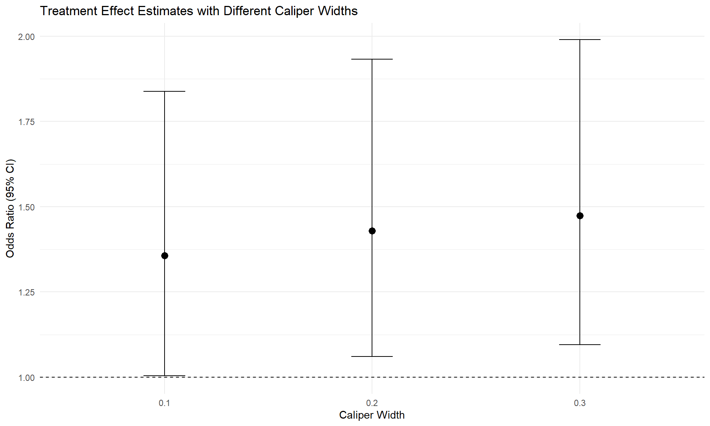
Alternative Matching Methods
# Try different matching methods
match_methods <- c("nearest", "optimal", "full")
method_results <- data.frame()
for (method in match_methods) {
# Perform matching with current method
m_out <- matchit(ps_formula, data = df, method = method)
# Extract matched data
m_data <- match.data(m_out)
# Calculate treatment effect
model <- glm(event ~ treatment, data = m_data, family = binomial)
# Get odds ratio and confidence interval
or <- exp(coef(model)["treatment"])
ci <- exp(confint(model)["treatment", ])
# Add results to dataframe
method_results <- rbind(method_results,
data.frame(Method = method,
Matched_Pairs = nrow(m_data)/2,
OR = or,
Lower_CI = ci[1],
Upper_CI = ci[2]))
}
# Display results
knitr::kable(method_results, digits = 3,
caption = "Sensitivity Analysis with Different Matching Methods")| Method | Matched_Pairs | OR | Lower_CI | Upper_CI | |
|---|---|---|---|---|---|
| treatment | nearest | 693 | 2.317 | 1.751 | 3.086 |
| treatment1 | optimal | 693 | 1.216 | 0.895 | 1.655 |
| treatment2 | full | 2500 | 1.366 | 1.081 | 1.744 |
# Plot results
ggplot(method_results, aes(x = Method, y = OR)) +
geom_point(size = 3) +
geom_errorbar(aes(ymin = Lower_CI, ymax = Upper_CI), width = 0.2) +
geom_hline(yintercept = 1, linetype = "dashed") +
labs(
title = "Treatment Effect Estimates with Different Matching Methods",
x = "Matching Method",
y = "Odds Ratio (95% CI)"
) +
theme_minimal()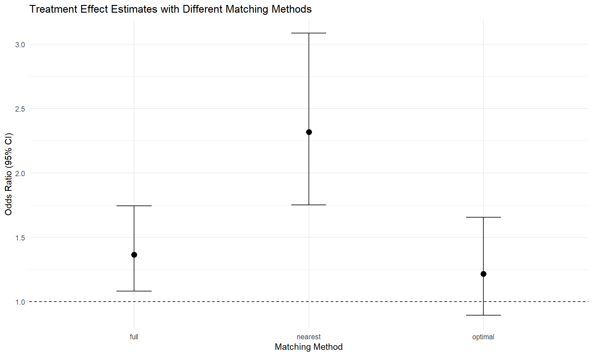
Proportional Hazards Assumption Check
# Test proportional hazards assumption
cox_model_test <- cox.zph(cox_adjusted)
print(cox_model_test)## chisq df p
## treatment 0.1866 1 0.666
## age 2.4425 1 0.118
## sex 0.9692 1 0.325
## diabetes 0.0193 1 0.889
## hypertension 0.2301 1 0.631
## baseline_gfr 2.2722 1 0.132
## bmi 2.9290 1 0.087
## cirrhosis 0.0600 1 0.807
## prev_aki 0.1179 1 0.731
## heart_failure 6.5205 1 0.011
## nsaid_use 0.1534 1 0.695
## GLOBAL 18.2710 11 0.076# Plot Schoenfeld residuals
plot(cox_model_test)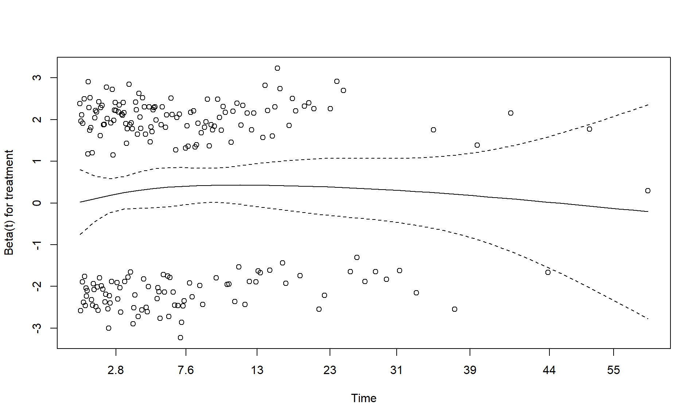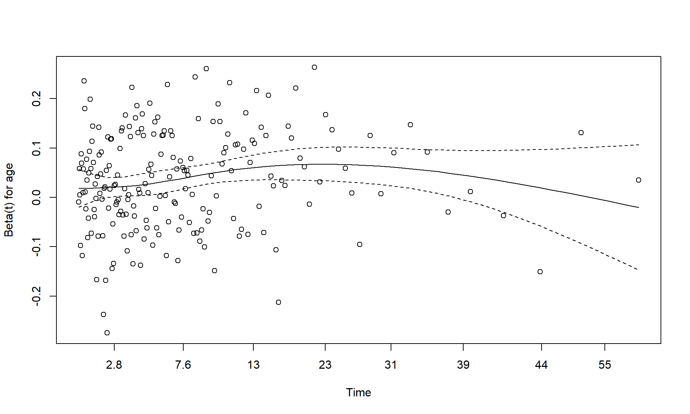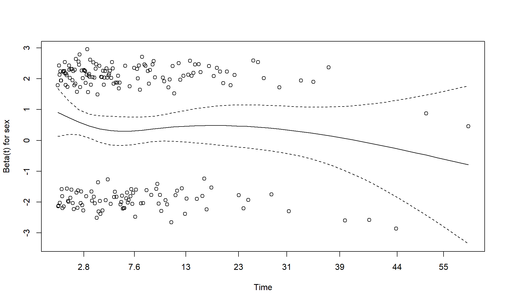 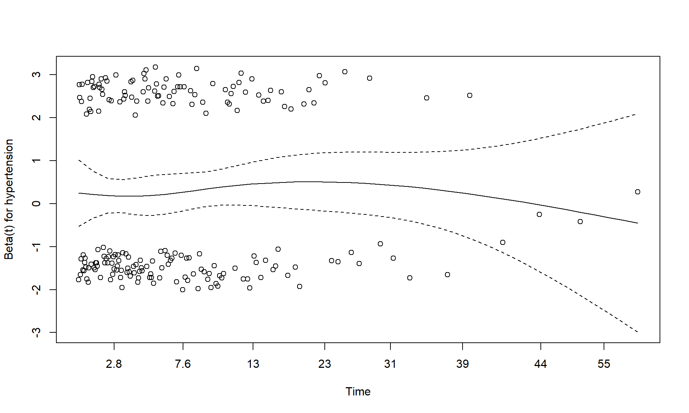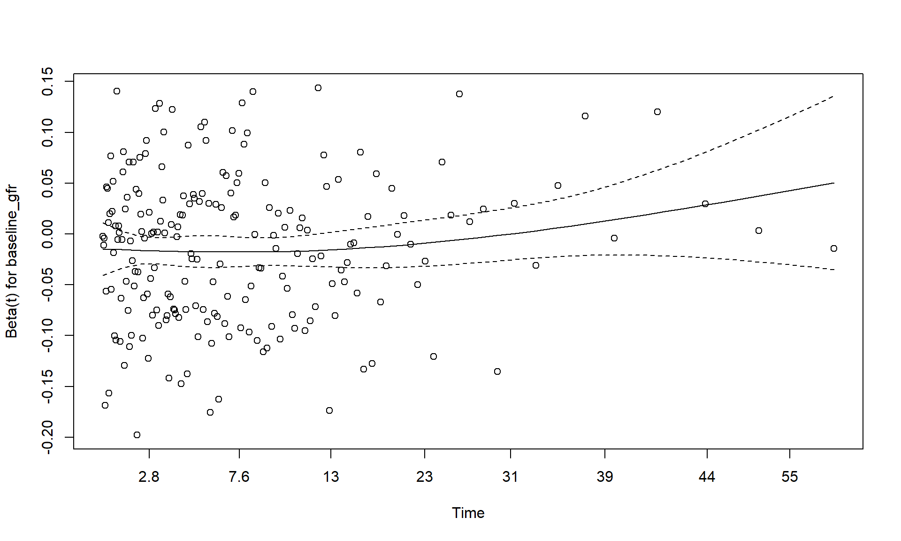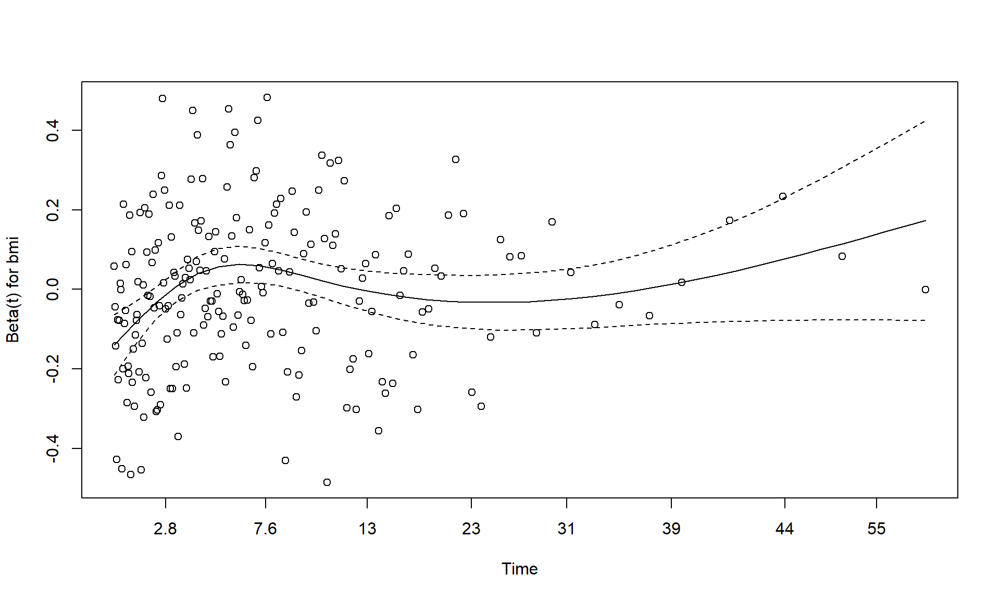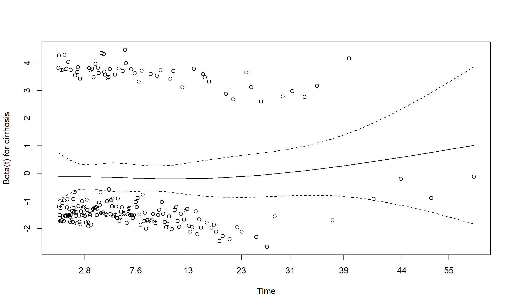
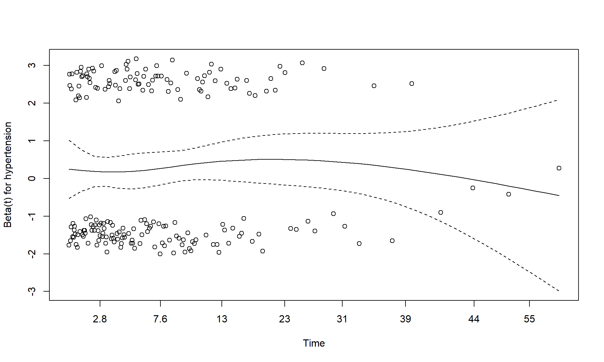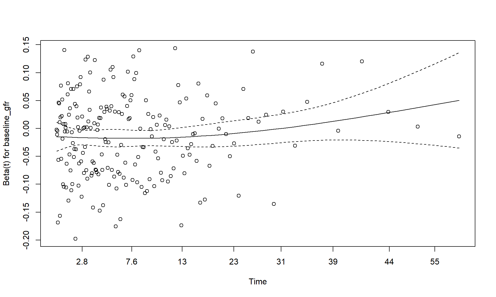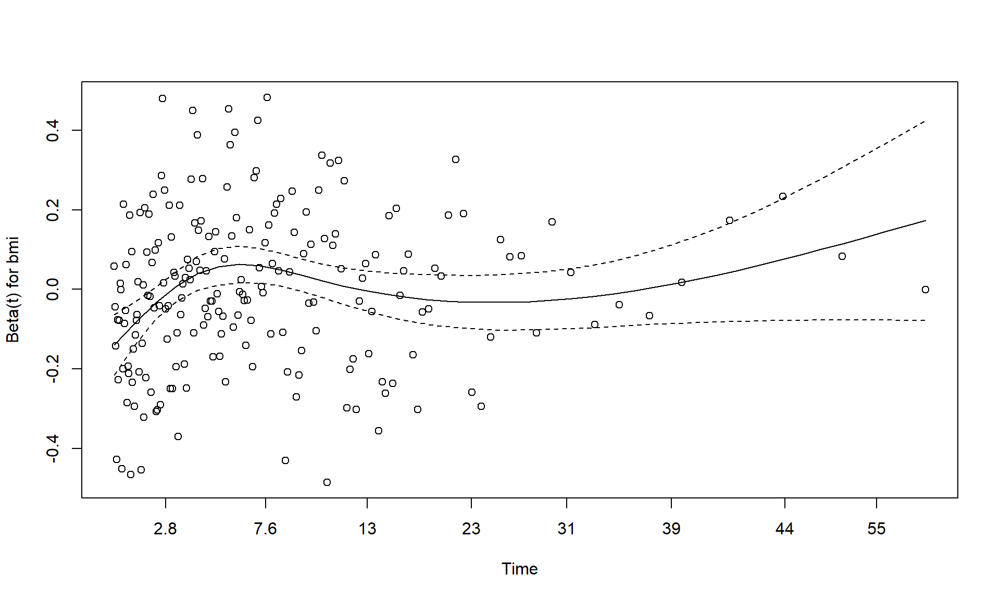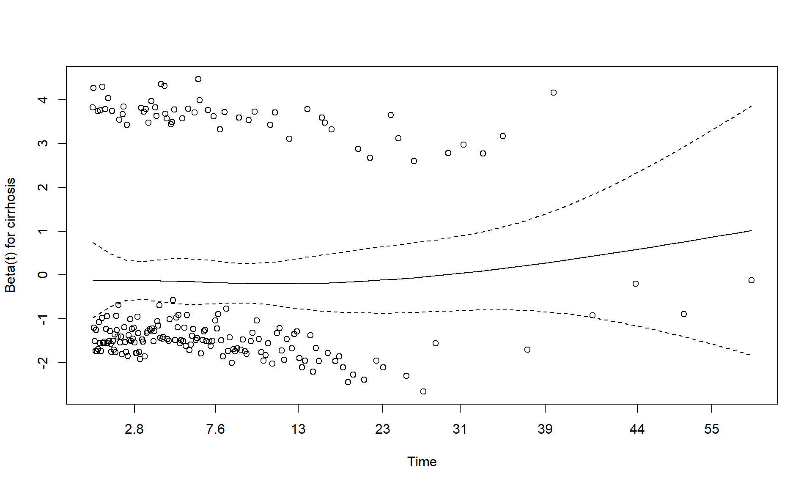 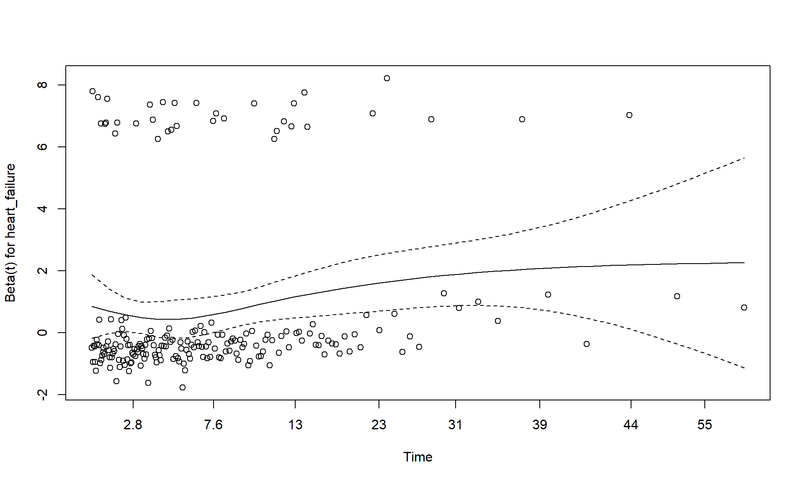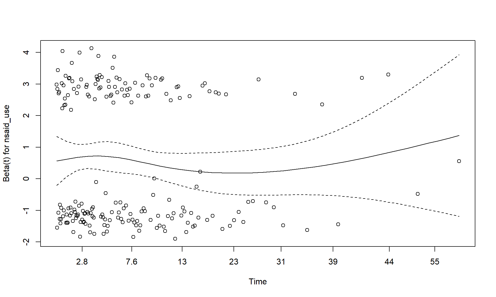
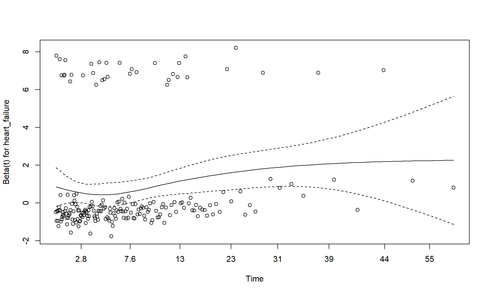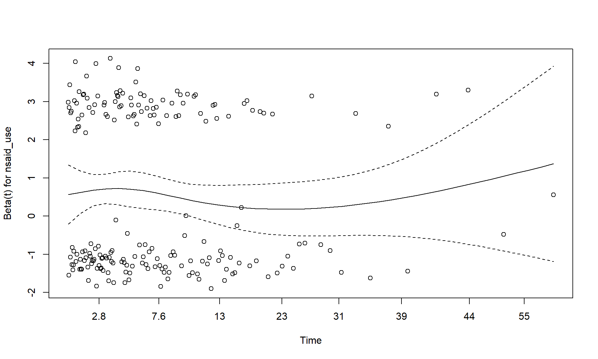
Conclusion
# Summarize key findings
cat("Key findings:\n")## Key findings:cat("1. Pre-matching analysis showed significant differences between treatment groups\n")## 1. Pre-matching analysis showed significant differences between treatment groupscat("2. Propensity score matching balanced covariates between groups\n")## 2. Propensity score matching balanced covariates between groupscat("3. The matched analysis produced a hazard ratio of", round(hr_simple, 2),
"(95% CI:", round(hr_simple_lower, 2), "-", round(hr_simple_upper, 2), ")\n")## 3. The matched analysis produced a hazard ratio of 1.42 (95% CI: 1.08 - 1.88 )cat("4. After adjustment for covariates, the hazard ratio was", round(hr_adjusted, 2),
"(95% CI:", round(hr_adjusted_lower, 2), "-", round(hr_adjusted_upper, 2), ")\n")## 4. After adjustment for covariates, the hazard ratio was 1.34 (95% CI: 1.01 - 1.77 )# Interpret results based on hazard ratio confidence interval
if (hr_adjusted_lower <= 1 && hr_adjusted_upper >= 1) {
cat("5. The analysis does not provide evidence of an increased risk of AKI with SOF-containing DAAs\n")
} else if (hr_adjusted_upper < 1) {
cat("5. The analysis suggests a potential protective effect of SOF-containing DAAs on AKI risk\n")
} else {
cat("5. The analysis suggests a potential increased risk of AKI with SOF-containing DAAs\n")
}## 5. The analysis suggests a potential increased risk of AKI with SOF-containing DAAsLimitations
This analysis has several limitations:
- Propensity score matching can only balance observed covariates, and unmeasured confounding may still be present.
- The analysis is based on claims data, which may have limitations in capturing all relevant clinical information.
- Censoring assumptions may influence the results, especially if censoring is informative.
- The treatment effect may vary across subgroups, which is not explored in this primary analysis.
- The definition of AKI based on diagnosis codes may not capture all cases, leading to potential outcome misclassification.